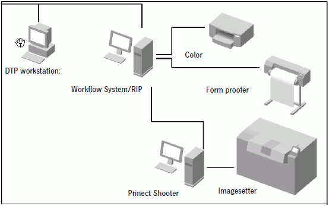

Prinect Shooter requires incoming job data that are already interpreted and screened. The screened job data must be in the Tiff-B format and are filed in a hot folder monitored by Prinect Shooter, for example, through a network connection. The job data are converted to the format matching the output device and sent to the output device by means of an interface card integrated in the Prinect Shooter PC and a special connection cable.
This concept means that to output data with Prinect Shooter you need an additional RIP or a workflow system that is responsible for the interpretation of the PostScript or PDF print data and screening. The upstream RIP must be able to create screened output data in Tiff-B format. The Prinect Shooter PC can send the output data very fast to the connected output device as interpretation and screening are done at a different PC.

You can drive a high-resolution output device (platesetter/imagesetter) with Prinect Shooter. You must drive proofers through an upstream workflow system or a RIP.
Copyright © 2013 Heidelberger Druckmaschinen AG